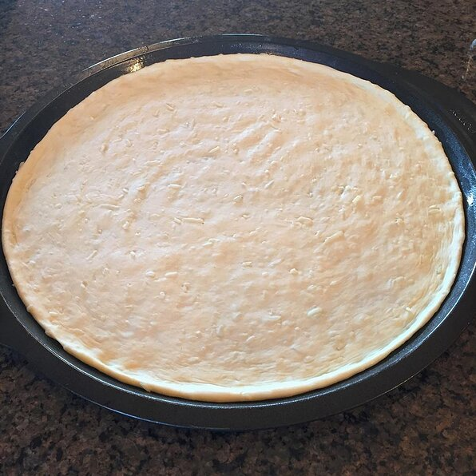

Pizza Dough

Description
This is a quick an easy recipe for creating pizza dough when you need to have that pizza dinner ready in no time!
Ingredients
- 500ml of All Purpose Flour
- 8 grams of active yeast
- 1 teaspoon of salt
- 450 ml of warm water
- 2 tablespoons of extra virgin olive oil
Steps
- Add the 8 grams of active yeast to the warm water and let sit for 10 min
- Place the 500ml of all purpose flour in a mixing bowl
- Add 1 teaspoon of salt to the flour
- Add the water yeast mix to the flour and start mixing
- add 1 tablespoon of oil to the mixture
- coat another bowl with the remainding oil
- once mixture is clumped together, lightly flour the counter surface and start kneading the dough for 5 minutes to develop the glutten
- place the dough in the second bowl and cover with a damp cloth for 1.5 hours or until it doubles in size